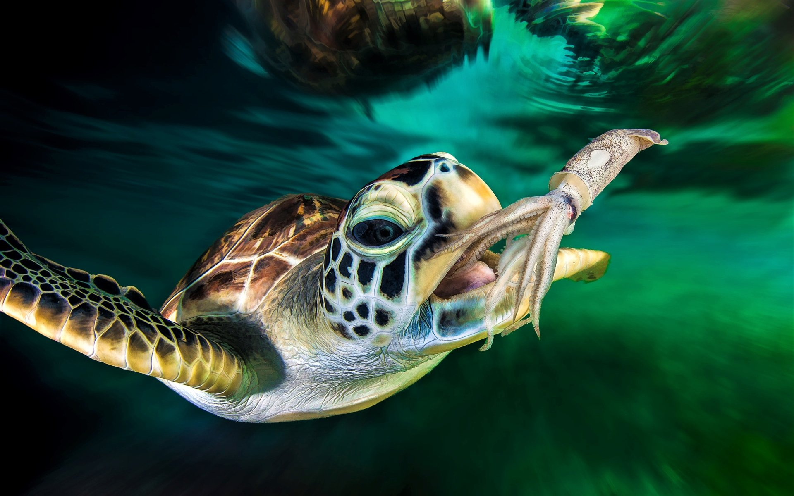
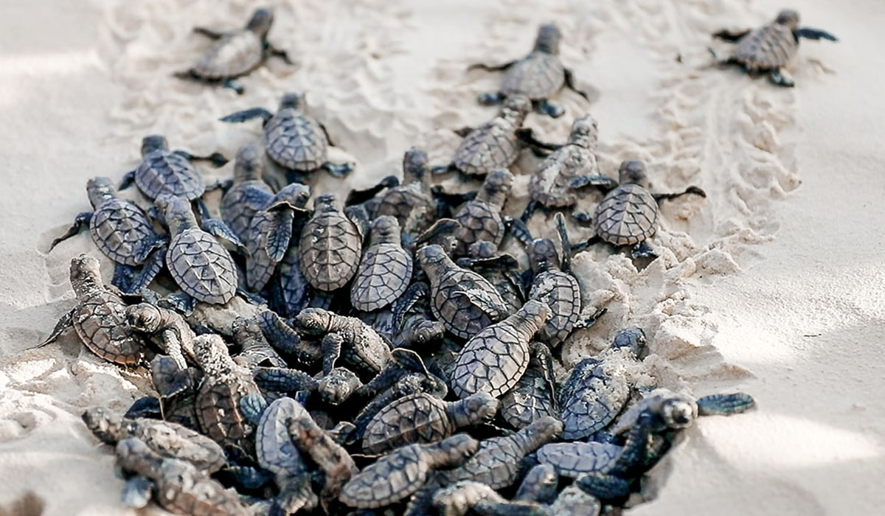
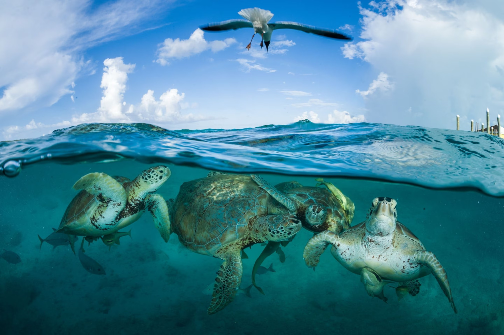

Sea turtles are incredible reptiles that have evolved to thrive in their marine habitat. Their streamlined bodies, large size, and strong front flippers allow them to swim great distances and dive to incredible depths. Although sea turtles can hold their breath for hours when resting or sleeping, they surface frequently to breathe.
There are seven known species of sea turtles, including the Green sea turtle, Hawksbill sea turtle, Loggerhead sea turtle, Olive ridley sea turtle, Kemp's ridley sea turtle, Leatherback sea turtle, and Flatback sea turtle. Of these seven species, Sri Lanka is fortunate to host five, which come to nest along the country's beautiful coastal areas. These five species are the Green Turtle (Chelonia mydas), Olive Ridley (Lepidochelys olivacea), Hawksbill (Eretmochelys imbricata), Loggerhead (Caretta caretta), and Leatherback (Dermochelys coriacea), which are collectively known as the "big five" sea turtles.
If you plan to visit Sri Lanka for a beach vacation, you will have the rare opportunity to witness these incredible endangered species in their natural habitat.
What do they eat? Different types of sea turtles have different diets. Sea turtle mouths and jaws are also shaped differently depending on their diet.
|
Where do they live? Most of the world's oceans are home to marine turtles. However, they prefer to inhabit continental shelf waters and rarely venture into polar seas. In addition to their preference for warmer climates, male turtles stay in the sea throughout their lives while female turtles come ashore to lay eggs. Once the hatchlings have emerged from their sandy nests, they are drawn to the distant horizon. For the next several years, juvenile turtles spend their initial years in open seas and move to protected bays, estuaries and other nearshore waters when they become adults. Only one out of 1 000 hatchlings survives to maturity. Some sea turtles, such as the leatherback, are mostly pelagic (open ocean), while others, such as the green turtle, may bask in terrestrial environments. In their early years, they float in seaweed mats. |
Who are their enemies? Sea turtles face significant threats from humans, who are their primary enemies. Fishing gear is a major risk for most sea turtles, especially endangered species such as loggerheads, greens, and leatherbacks. This danger is on the rise due to the increasing expansion of fishing activities. Although sea turtles face predation at all stages of their life cycle, it is particularly high during their first two years. Eggs are often consumed by raccoons, skunks, opossums, mongooses, coatis, and dogs. Hatchlings, on the other hand, are vulnerable to attacks by mammals, sea birds, crabs, and carnivorous fish. Predation remains a significant threat until the turtles grow large enough to avoid being swallowed. Even then, green sea turtles face a formidable predator in the form of sharks during their entire life cycle. |
|---|


.png)